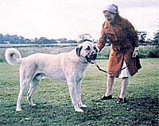
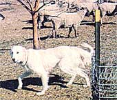
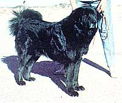
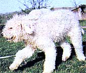
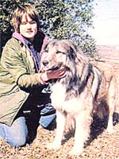
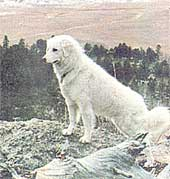

Issue # 73- January/February 1982
There's a way to deter livestock predators that's as old as the sheep-grazing hills of Europe.
STAFF PHOTOS
Anatolian Shepherds are
courageous and were once used as
war dogs.
The Maremma, a bit smaller and
friendlier than the other
guardians, is well suited to small farms
The Tibetan Mastiff is one of the
world's oldest breeds.
This Komondor pup's distinctive
coat is not yet fully developed.
The Shar Planinetz is from
Yugoslavia.
The Hungarian Kuvasz enjoys
watching his charges from higher
elevations.
Ed Andrews and Randy Kidd
In issue 69, MOTHER featured an article on the Komondor, a rare breed of dog that has long been used, in Hungary, for livestock protection. Well, we've since been made aware of many other European and Asian breeds that have evolved, often over hundreds of generations, to become effective canine shepherds. What's more, such dogs can be trained to guard almost anything, so even folks who don't raise sheep may be interested in learning more about this fine, natural method of predator control.
Predatory animals are a source of continual frustration to most homesteaders who raise livestock. A quietly foraging flock of sheep or hens will too often provide an easy meal to such animals as coyotes and foxes. Worse yet, wild dog packs -which often include tame canines that are allowed to run, and which have been known to attack people-have become almost commonplace in many areas.
However, farmers frequently have little choice but to write off herd or flock losses rather than try to cope with the various marauders, because they've found that attempting to control the varmints by shooting or trapping them is time consuming ... while poisons often endanger innocent species ... and physical barriers are just too costly.
WHAT CAN BE DONE?
Fortunately, there is (once again!) an old-time natural remedy that can be effective in solving the dilemma. Livestock raisers in Europe and Asia have, for thousands of years, employed various breeds of dogs to deter both two-and four-legged predators. Several of these canine varieties have come down through the centuries unspoiled by irresponsible breeders or dog show fanciers (who have bred defects into many types). The guard dogs are often referred to as "shepherds", but they don't actually herd livestock in the manner of Border collies or Belgian sheepdogs. Instead, these animals have more "maternal" and protective instincts, and will allow their charges to wander freely ... as long as they remain in sight and out of trouble.
In fact, protection dogs are actually followers ... they meander behind their flocks quietly, almost lethargically. If you were to spend a long period of time observing an assembly of livestock with a good guard dog in its midst, you'd probably be amazed at the total lack of action in the field. No stock disappear, no predators set foot inside the pasture, and no strangers are allowed entrance in the dog's territory.
Evidently the mere presence of such a canine is enough to discourage most predators. If a coyote, another dog, or an unknown human should intrude upon the scene, though, the attitude of the dog will change drastically. It will first sound a barking challenge ... and if that doesn't repel the intruder, the canine will "rush" the stranger with tail upraised. The dog will always carefully position itself between its charges and the trespasser, and - if necessary - can become quite aggressive. However, once a predator has been driven off the premises, the dog generally returns to the flock ... knowing full well that its place is alongside the grassgrazers, not out chasing after a fight.
Obviously, you won't be finding many of these very specialized animals at your neighborhood pet shop. In fact, only a few are readily available in the United States ... mostly through special breeders and associations. Here are brief descriptions - and sources for further information - of some of the working dogs being bred in the U.S. today.
THE GREAT PYRENEES. This dog is named for its original work place, the Pyrenees Mountains bordering France and Spain. A large white animal with a face resembling that of a bear, the "Pyr" will mature fairly early and can often assume its duties at six months of age. These are versatile dogs . . . besides being formidable livestock guards, they'll typically enjoy pulling carts or sleds, and can even perform remarkably well as babysitters! The male stands 27 to 32 inches tall and weighs 100 to 125 pounds (females are somewhat smaller). Their coats are heavy, and the animals are well suited to regions that experience cold weather. For more information, write to the Great Pyrenees Club of America, c/o Coombs, Dept. TMEN, 3119 Valley Road, West Millington, New Jersey 07946.
THE SHAR PLANINETZ. This Yugoslavian native looks much like the Great Pyrenees but is slightly smaller, measuring 22 to 24 inches at the shoulder. Most "Shars" have buff or light gray coats, but the color can range from black to white (the animals' faces and muzzles are usually darkest). These dogs are friendly and demonstrative as pups but will become aloof and distant as they mature. You can contact the Yugoslavian Shepherd Shar Planinetz Club, c/o Mrvichin, Dept. TMEN, 18335 Aquiro, Rowland Heights, California 91748.
THE MAREMMA. A dog that has worked for centuries in the plains of Tuscany and in the Abruzzi mountains of central Italy, the Maremma resembles the two previously described breeds (in fact, all three probably share a common Asian ancestry). A typical male stands 26 to 29 inches at the shoulder and weighs in at about 80 pounds. Its coat is thick and white, and will occasionally sport dark spots. The Maremma seems to be friendlier than most other protection breeds, and thus might be better suited for small farms where considerable human contact is likely. Write for information to the Maremma Sheepdog Club of Great Britain, Arthur Hammond, Secretary, Dept. TMEN, 29A Manor Road, Brackley, Northants., England NN136ED.
THE KUVASZ. In Turkish the word "kuvasz" means "protector", so it's be lieved that this breed came to Hungary - where it's found today - from eastern Turkey ... probably back in the twelfth century. The dog resembles both the Great Pyrenees and the Maremma in coat and color. Its standard height is 28 to 30 inches at the shoulder and its weight 100 to 115 pounds. With a temperament best described as "lively", this breed is both highly possessive of its flock and gentle with its family. Contact the Kuvasz Club of America, c/o A. Andres, Secretary, Dept. TMEN, 18 South Terrace Avenue, Mount Vernon, New York 10550.
THE KOMONDOR. This breed from Hungary bears no resemblance to the others. Its coat is unique: a long, thick, moplike mass that hangs in cords or "tassels" from its body, thus protecting it from inclement weather or predators' teeth. Literature on the breed is available from the Middle Atlantic States Komondor Club, c/o Levy, Dept. TMEN, 102 Russell Road, Princeton, New Jersey 08540. [EDITOR'S NOTE: For a more extensive discussion, refer to MOTHER NO. 69, page 162. Turn to page 120 for information on ordering back issues.]
THE ANATOLIAN SHEPHERD. These animals were originally bred on the Anatotlan plateau of Turkey, where they're still extensively used to protect sheep from wolves. Their coats range from smooth to shaggy and from light to dark, and their muzzles are generally dark. Males range from 70 to 100 pounds, and the standard height is 29 inches at the shoulder. These dogs are gentle to their families but become very aggressive against predators (either animal or human) and will fight to kill. There are currently 250 Anatolians registered in the U.S. Contact the Anatolian Shepherd Dog Club of America, Dept. TMEN, P.O. Box 1271, Alpine, California 92001.
THE TIBETAN MASTIFF. Mastiff owners claim that the dogs are the ancestors of many of the canines we've already discussed, as well as of other working dogs. The breed dates back to 1200 B.C. and has never been hybridized. Mastiffs are primarily used today as guardians in the villages of Tibet and Nepal and sometimes accompany the nomadic caravans that roam those countries. (The dogs travel well, and have adapted to the rigors of mountain and high desert life.) This is one of the world's rarest breeds . . . fewer than 100 are registered in the United States. Inquiries can be sent to the Tibetan Mastiff Club, c/o Rohrer, Dept. TMEN, P.O. Box 160, Pearblossom, California 93553.
EDITOR'S NOTE: As all these clubs are non-profit organizations and operate on extremely small budgets, we recommend that any readers interested in receiving information about the breeds described here enclose a dollar or two to help defray expenses.
If you decide to purchase a pup for livestock protection purposes, insist on a registered dog, with papers to prove that it comes from quality stock.
|
 |
 |
 |
|
 |
 |
 |